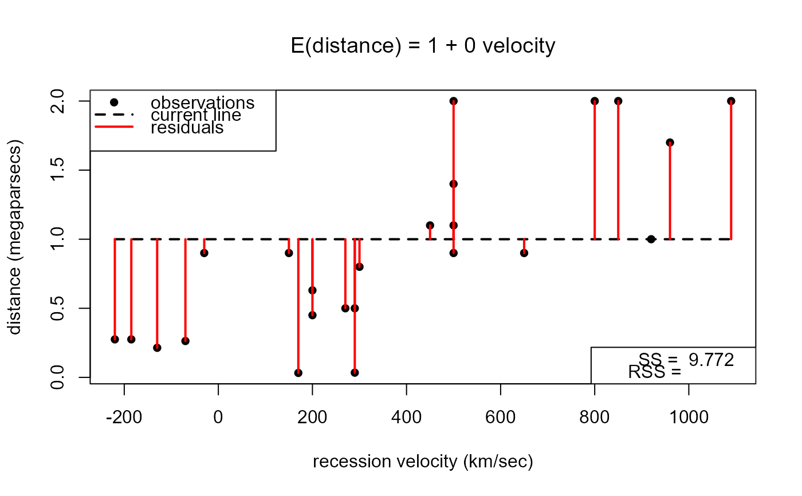

A movie to help to visualize the fitting of a regression line using least squares in the case of a simple linear regression, that is, a linear regression of one response variable on one explanatory variable.
lin_reg_movie(data, delta_alpha = 0.1, delta_beta = 1e-04, ...)A data frame with two variables or a numeric matrix with 2 columns. The first column must contain the response data, the second column the explanatory data.
Numeric scalars. The respective amounts by
which the values of the intercept and gradient of the line are
increased/decreased after one click of the +/- button.
The default values are set with the hubble data used
in the example below in mind.
Further arguments, such as graphical parameters
(see par to be passed to
plot when producing a scatter plot of the
response data against the explanatory data. For example, the
plotting character used for the points can be chosen using pch.
If pch has length greater than 1 then only the first element
is used. The default value of pch is 16 (filled circle).
The labels on the horizontal and vertical axes can be specified
using xlab and ylab respectively.
Nothing is returned, only the animation is produced.
A scatter plot of response data against the explanatory data is produced. On this plot is superimposed a dashed line that the user can move, by changing its intercept alpha and gradient beta using +/- buttons. The initial value of alpha is the mean of the response data and the initial value of beta is 0. The sizes of the residuals are shown using red lines. One of the legends gives the current sum of squares residuals (SS).
Another +/- button allows the user to add the least squares regression line to the plot, and the associated residual sum of squares (RSS) to the legend, for comparison.
stat0002movies: general information about the movies.
# Produce movie using values from the Aussie births data
lin_reg_movie(hubble, pch = 16, xlab = "recession velocity (km/sec)",
ylab = "distance (megaparsecs)")
